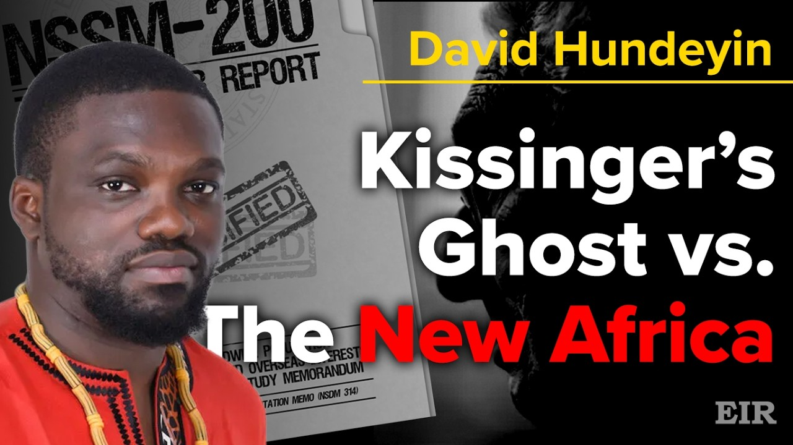
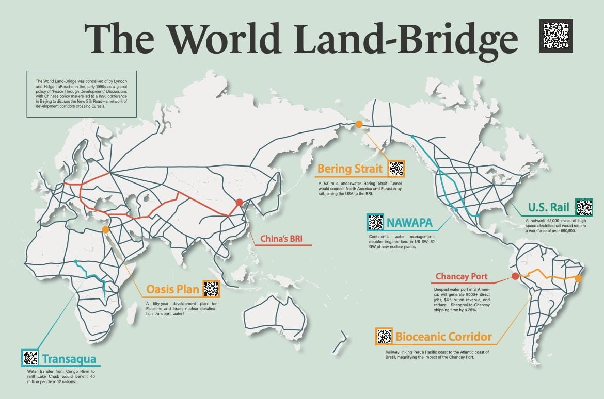

D 世界ランドブリッジ
開発で結ばれた一つの惑星
1990年代初頭にリンドンとヘルガのラルーシュ夫妻が「開発による平和」という世界政策として構想 — 鉄道・水・エネルギーの回廊があらゆる大陸を結びます。点滅するマーカーをクリックして注目プロジェクトを見てみましょう。

マーカーをクリックしてプロジェクトを見る地図（暫定）： 「世界ランドブリッジ」見開きページ — ピンの位置は草案です。
注目プロジェクト · 中東
オアシス計画
1975年にリンドン・ラルーシュが初めて提唱した、パレスチナとイスラエルのための50年開発構想。紙の条約ではなく、physical economy（実体経済）の上に築かれる平和 — 地域のすべての人々のための水、エネルギー、交通です。
- 原子力による海水淡水化で、地政学が希少性を奪い合う地に豊かな真水を生み出す
- 新しい運河、鉄道回廊、開発都市が地域を世界ランドブリッジへとつなぐ
- 開発こそ恒久平和の真の基盤

注目プロジェクト · アフリカ
トランスアクア
チャド湖を再び満たす大プロジェクト — コンゴ川流域の水のごく一部を約2,400kmの可航運河で北へ送り、アフリカの中心部に水、エネルギー、交通をもたらします。
- 12か国、約4,000万人に恩恵
- 内陸アフリカの可航水路の背骨：灌漑、水力発電、商業
- 縮小するチャド湖を再生 — 安全保障の危機を開発の原動力へ
4:3
🗺
チャド湖流域の地図
地図またはインフォグラフィックのプレースホルダー
注目プロジェクト · 南米
チャンカイ港と二大洋回廊
⬡ 草稿 — パンフレットの原文ではこのセクションは未定です。以下のプロジェクトは世界ランドブリッジ地図から採ったもので、差し替え可能です。
南米で最も水深の深いペルーのチャンカイ港が、太平洋岸とブラジルの大西洋岸を結ぶ二大洋鉄道回廊とつながります — 上海と南米の間の海上輸送時間を最大4分の1短縮し、大陸内陸部を開発へと開きます。
- 8,000人超の直接雇用と、推定年間45億ドルの収益
- 鉄道の背骨が港の効果を大陸全体に波及させる
- 南米が世界ランドブリッジに加わる
4:3
🗺
回廊の地図
地図またはインフォグラフィックのプレースホルダー
注目プロジェクト · ニューヨーク・ブロンクス
開発は足元から始まる
⬡ プレースホルダー — ブロンクスの注目プロジェクトは近日発表予定です。
世界ランドブリッジは遠い大陸だけの話ではありません — あらゆるコミュニティの使命です。ブロンクスのセクションでは、青年運動の地元での組織活動と、ニューヨークのための具体的な開発プロジェクトを紹介し、この街を世界へつなぎます。
- 注目プロジェクトの本文は後日掲載
- 青年運動の地元での活動とイベント
- 現地での参加方法
4:3
📷
地元の組織活動の写真
写真のプレースホルダー